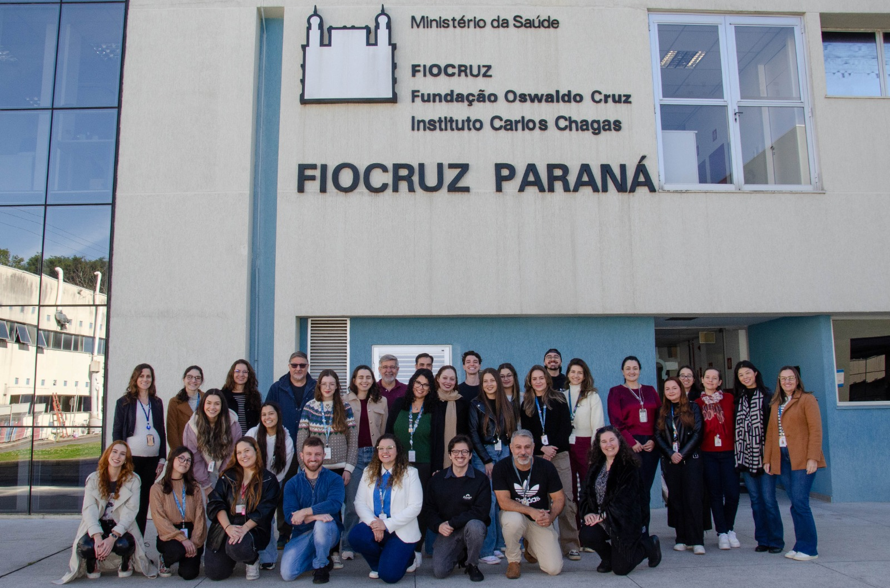

Laboratório de Biologia Básica de Células-Tronco
LabCET
Pesquisa em células-tronco humanas, diferenciação celular, regulação gênica, medicina regenerativa e modelos in vitro aplicados à saúde.
Sobre o LabCET
Pesquisa básica, formação científica e inovação em células-tronco.
O Laboratório de Biologia Básica de Células-Tronco reúne pesquisadores, pós-graduandos, estudantes e equipe técnica dedicados ao estudo dos mecanismos que regulam a autorrenovação, diferenciação e função de células-tronco humanas. O grupo integra abordagens experimentais e computacionais para investigar processos fundamentais da biologia celular e molecular.
Áreas de atuação
Principais linhas de pesquisa
Atualizações